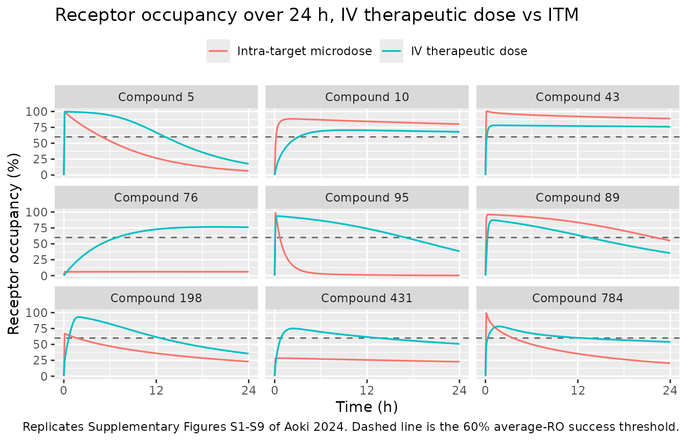
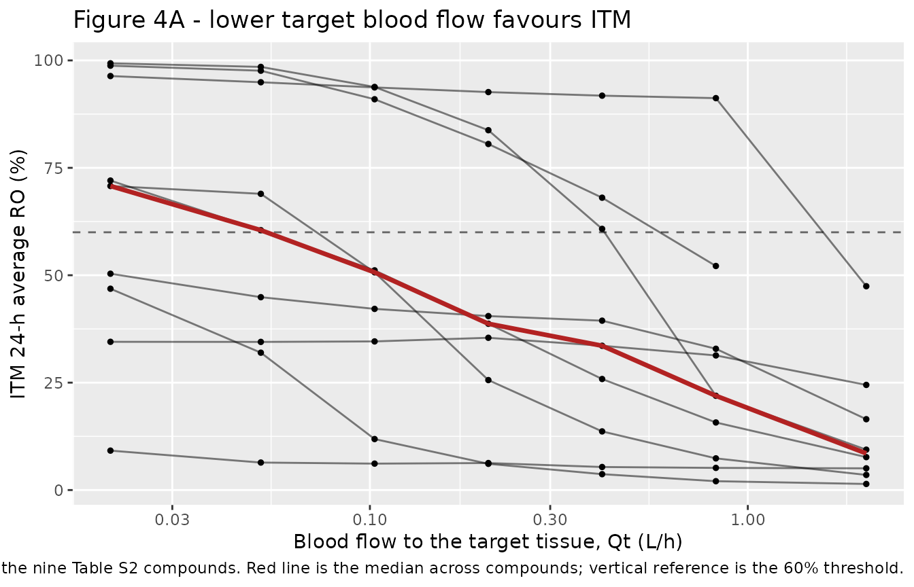
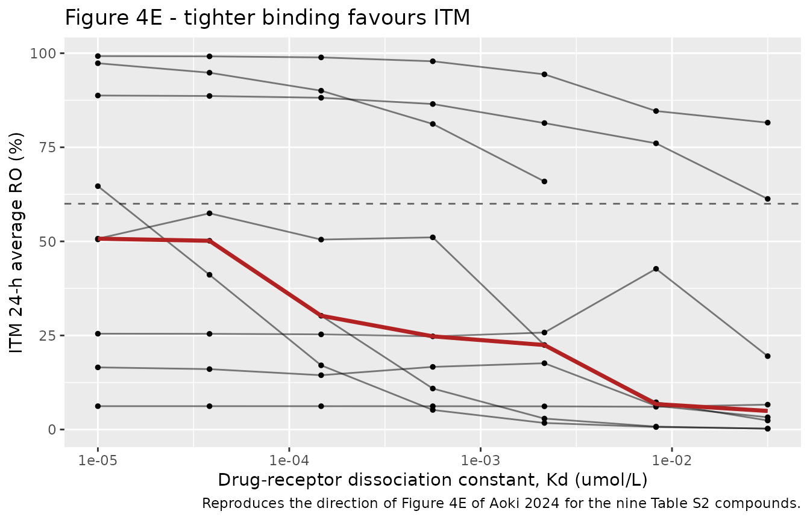
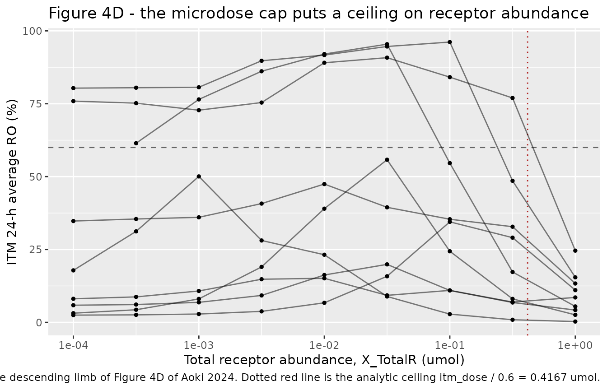

Intra-target microdosing target engagement (Aoki 2024)
Source:vignettes/articles/Aoki_2024_intratarget_microdosing_pbpk.Rmd
Aoki_2024_intratarget_microdosing_pbpk.RmdModel and source
- Citation: Aoki Y, Rowland M, Sugiyama Y. When to consider
intra-target microdosing: physiologically based pharmacokinetic modeling
approach to quantitatively identify key factors for observing target
engagement. Front Pharmacol. 2024;15:1366160. doi:10.3389/fphar.2024.1366160. The ODE system is
transcribed line for line from the
model_textblock of the authors’ own simulation script, Supplementary Data Sheet 1 (DataSheet1.ZIP -> Aoki_etal_ITM_simulationCode/suppMaterial_modelCode.R); the physiological constants are Table 1; the parameter values are the Pctl. 50 column of Supplementary Table S1 (Supplementary Data Sheet 2, DataSheet2.docx); and the nine worked example compounds are Supplementary Table S2, each of which reproduces exactly a numbered row of the companion parameter file Aoki_etal_ITM_simulationCode/SuppMaterial_modelParameter.csv. The structure originates with Koyama S, Toshimoto K, Lee W, Aoki Y, Sugiyama Y. Revisiting nonlinear bosentan pharmacokinetics by physiologically based pharmacokinetic modeling. Drug Metab Dispos. 2021;49(4):298-304. doi:10.1124/dmd.120.000023 (not open access; not on disk – but it is not needed here, because Aoki 2024 publishes the complete ODE system and every parameter value in its own supplement). - Description: PBPK-PKRO (simplified whole-body, permeability-limited target tissue). Drug-agnostic small-molecule model used by Aoki, Rowland & Sugiyama (2024) to ask when Intra-Target Microdosing (ITM) – direct delivery of a Phase-0 microdose into the target tissue – can engage a target as well as a systemically administered therapeutic dose. Plasma exchanges with three perfusion-limited well-stirred tissues (muscle, skin, adipose), with a permeability-limited liver (hepatic extracellular space in series with the hepatocyte), and with a permeability-limited target tissue (extracellular space in series with the intracellular space). Both the liver and the target tissue take drug up by saturable active transport plus passive diffusion, return it by passive diffusion, and metabolise it by a saturable intracellular route; renal clearance removes drug from plasma. Inside the target tissue the unbound drug binds a finite receptor pool of total amount rtot, so fractional receptor occupancy (RO) – the paper’s measure of target engagement – is an explicit model output. The same structure serves both routes: an intravenous dose enters central, an ITM dose enters the target-tissue extracellular space. This is a Monte Carlo simulation study, not a fit: the paper draws 10,000 ‘virtual compounds’ from the log-normal parameter distributions of Table 2 and scores each one for ITM success (24-h average RO >= 60%). The values below are therefore the published MEDIANS of those distributions (Supplementary Table S1, Pctl. 50), i.e. a reference typical virtual compound rather than any single compound; every parameter is fixed() because none was estimated from data. The vignette reproduces the nine fully specified example compounds of Supplementary Table S2 and their published outcomes. See the vignette Errata for three published-table discrepancies, each settled by the authors’ own code.
- Article: https://doi.org/10.3389/fphar.2024.1366160
- Supplementary Data Sheet 1 (the authors’ own simulation code and the
Monte Carlo parameter file):
DataSheet1.ZIP->Aoki_etal_ITM_simulationCode/suppMaterial_modelCode.Rand.../SuppMaterial_modelParameter.csv - Supplementary Data Sheet 2 (Supplementary Tables S1-S2,
Supplementary Figures S1-S12):
DataSheet2.docx
Both supplements are reachable from the article’s Supplementary Material section, and the article is CC BY.
Intra-Target Microdosing (ITM) is a Phase-0 strategy in which a microdose – capped by regulatory guidance at 1/100th of the anticipated therapeutic dose or 100 ug, whichever is smaller – is delivered directly into the target tissue rather than systemically. Aoki, Rowland and Sugiyama ask when that microdose can still engage the target as well as a full systemic therapeutic dose. They answer it with a simplified PBPK model carrying an explicit receptor-binding layer inside the target tissue, and a Monte Carlo experiment over 10,000 “virtual compounds” drawn to mimic the properties of marketed small molecules.
Population
There are no human subjects. The paper is a simulation study, so its “population” is a distribution over compounds, not over people: 10,000 virtual compounds in the main analysis and 1,000 per scenario across 21 sensitivity scenarios. Every virtual subject is assumed to weigh 75 kg (Methods; Table 1), from which all physiological volumes and blood flows are derived as linear functions of body weight after Davies and Morris (1993). The target tissue is parameterised as a 5 g solid tumour using the vascular (0.204) and interstitial (0.296) volume fractions and the perfusion rate of the permeability-limited tumour model of Rose et al. (2019).
Kinetic parameters are drawn log-normally with the interquartile
ranges of Table 2; the correlated block (fp =
fb, renal clearance and the tissue partition scaling) comes
from the multivariate log-normal of Kato et al. (2003), and the
target-binding parameters (Kd, koff, receptor
abundance) from Dahl and Akerud (2013). The authors validate the
resulting virtual compounds externally against 164 marketed small
molecules from Jansson et al. (2020) (Figure 3).
The same information is available programmatically via the model’s
population metadata:
str(readModelDb("Aoki_2024_intratarget_microdosing_pbpk")()$population)
#> List of 6
#> $ species : chr "human"
#> $ n_subjects : chr "No human subjects. 10,000 simulated 'virtual compounds' in the main analysis (Methods, 'Summarize the success r"| __truncated__
#> $ weight_range : chr "75 kg assumed for every subject (Methods; Table 1)"
#> $ dose_range : chr "Intravenous doses scanned over 0.01-900,000 umol on a 1-9 x decade grid to locate each compound's 'estimated th"| __truncated__
#> $ disease_state: chr "Not a disease model. The target tissue is parameterised as a 5 g solid tumour, using the vascular (0.204) and i"| __truncated__
#> $ notes : chr "This is a methodological simulation study, so there is no observed dataset, no between-subject variability and "| __truncated__Source trace
Per-parameter origin is recorded as an in-file comment next to each
ini() entry in
inst/modeldb/pharmacokinetics/Aoki_2024_intratarget_microdosing_pbpk.R.
The table below collects them in one place. Every ini()
value is the median (Pctl. 50) of the 10,000-draw parameter distribution
summarised in Supplementary Table S1, so the packaged
defaults describe a reference typical virtual compound; the
nine fully specified compounds of Supplementary Table
S2 are carried in this vignette instead and are the
quantitative validation targets.
| Equation / parameter | Value | Source location |
|---|---|---|
| Full ODE system (13 states) | n/a | Supplementary Data Sheet 1, suppMaterial_modelCode.R,
model_text block |
| Model schematic | n/a | Figure 1 |
| Simulation workflow | n/a | Figure 2; Methods, “Assess the success of ITM for each virtual compound” |
wt |
75 kg | Methods (“assuming all subjects in the trials weigh 75 kg”); Table 1 “Weight” |
q_adipose, q_liver, q_muscle,
q_skin
|
3.72, 20.7, 10.7,
4.28 x wt x 60/1000 L/h |
Table 1 (Qa, Qh, Qm,
Qs), after Davies and Morris (1993) |
v_adipose, v_liver,
v_liver_ex, v_muscle, v_skin
|
142, 17.4, 6.69,
429, 111 x wt/1000 L |
Table 1 (Va, Vh, Vhe,
Vm, Vs) |
lq_tumor |
0.2058 L/h | Table 1: Qt = 0.686 x 60/1000 x 5, after Rose et
al. (2019) |
lv_tumor |
0.0025 L | Table 1: Vt = 5/1000 x (0.204 + 0.296) |
lv_tumor_ic |
0.0025 L | Table 1: Vt_ic = 5/1000 x (1 - 0.204 - 0.296) |
lkd |
0.0014 umol/L | Table S1 Pctl. 50; Table 2 IQR [0.0003, 0.006], from Dahl and Akerud (2013) |
lkon |
739 L/(umol h) | Table S1 Pctl. 50 (k_on) |
lrtot |
0.01 umol | Table S1 Pctl. 50 (X_TotalR); Table 2 IQR [0.001,
0.1] |
lvmax_uptake |
103 umol/h | Table S1 Pctl. 50; Table 2 IQR [10, 1000] |
lkm_uptake |
0.97 umol/L | Table S1 Pctl. 50; Table 2 IQR [1/3, 3] |
lps_dif |
30 L/h | Table S1 Pctl. 50 (PSdif_inf); Table 2 IQR [3,
300] |
lvmax_met |
259 umol/h | Table S1 Pctl. 50; Table 2 IQR [25, 2500] |
lkm_met |
10 umol/L | Table S1 Pctl. 50; Table 2 IQR [10/3, 30] |
lvmax_uptake_tumor |
0.2 umol/h | Table S1 Pctl. 50 (Vmax_tumorUptake); Table 2 IQR
[0.0192, 1.92] |
lkm_uptake_tumor |
1 umol/L | Table S1 Pctl. 50 (Km_tumourUptake); Table 2 IQR [1/3,
3] |
lps_dif_tumor |
0.12 L/h | Table S1 Pctl. 50 (PSdiff_tumInflux =
PSdiff_tumEflux); Table 2 IQR [0.0115, 1.15] |
lvmax_met_tumor |
0.19 umol/h | Table S1 Pctl. 50 (Vmax_tumMet); Table 2 IQR [0.0192,
1.92] |
lkm_met_tumor |
10 umol/L | Table S1 Pctl. 50 (Km_tumMet); Table 2 IQR [10/3,
30] |
fu_b |
0.26 | Table S1 Pctl. 50 (fb), correlated draw from Kato et
al. (2003) |
fu_liver, fu_tumor
|
0.83, 0.83 | Table S1 Pctl. 50 (fh, ft) |
lvc |
6 L | Table S1: V_central fixed at 6 for all 10,000
draws |
lcl_renal |
1.7 L/h | Table S1 Pctl. 50 (CLr) |
lkp_muscle, lkp_skin,
lkp_adipose
|
0.052, 0.13, 0.026 | Table S1 Pctl. 50; Table 2: 0.2, 0.5, 0.1 x
Kp_scaling
|
| Molar mass (for the 100 ug cap) | 400 g/mol | Table 2, “Molar mass … Fixed … 400” |
| ITM-success criterion | 24-h average RO >= 60% | Methods, “Assess the success of ITM for each virtual compound” |
propSd |
0.10 (placeholder) | not reported; no observed data exists in this paper |
Structural verification against the authors’ own code
The packaged model is a transcription of the model_text
block of suppMaterial_modelCode.R. Because that block is
published verbatim, the transcription can be checked directly rather
than argued: below, the authors’ model text is compiled as a plain
rxode2 model and solved side by side with the packaged
nlmixr2lib model over every state, for both routes of
administration and for all nine Supplementary Table S2 compounds.
This is a load-bearing check, not a formality. In the
nlmixr2 model-function form a named intermediate that
references an ODE state and is then used inside d/dt() can
silently evaluate to zero, deleting a Michaelis-Menten term with no
error and no warning. This model has six such terms, so all of them are
written out inline in model(); the comparison below is what
proves none was lost.
authors_model_text <- "
Qa=3.72*Weight*60/1000
Qh=20.7 *Weight*60/1000
Qm=10.7*Weight*60/1000
Qs=4.28 *Weight*60/1000
Va=142 *Weight/1000
Vh=17.4 *Weight/1000
Vhe=6.69 *Weight/1000
Vm=429 *Weight/1000
Vs=111 *Weight/1000
Vt=5/1000*(0.204+0.296)
Vt_ic=5/1000*(1-0.204-0.296)
k_off=Kd*k_on
HepUptake=Vmax_uptake * fb * C_HepEx / (Km_uptake + fb * C_HepEx)+ PSdif_inf * fb * C_HepEx
HepEflux=PSdif_inf * fh * C_Hep
HepMet=Vmax_met* fh * C_Hep/(Km_met+ fh * C_Hep)
Tumour_uptake=Vmax_tumorUptake*fb*C_tumourEx/(Km_tumourUptake+fb*C_tumourEx)+PSdiff_tumInflux* fb *C_tumourEx
Tumour_eflux=PSdiff_tumEflux*ft*C_tumourIC
Tumour_met=Vmax_tumMet*ft*C_tumourIC/(Km_tumMet+ft*C_tumourIC)
d/dt(C_Central)=1 / V_central * (Qh * (C_HepEx - C_Central) - CLr * C_Central + Qm * (C_Muscle / Kpm - C_Central) + Qs * (C_Skin / Kps - C_Central) + Qa * (C_Adipose / Kpa - C_Central) + Qt * (C_tumourEx - C_Central))
d/dt(C_HepEx)=1 / (Vhe) * (Qh * (C_Central - C_HepEx) - HepUptake + HepEflux)
d/dt(C_Hep)=1 / (Vh) * (HepUptake - HepEflux - HepMet)
d/dt(C_Muscle)=1 / Vm * Qm * (C_Central - C_Muscle / Kpm)
d/dt(C_Skin)=1 / Vs * Qs * (C_Central - C_Skin / Kps)
d/dt(C_Adipose)=1 / Va * Qa * (C_Central - C_Adipose / Kpa)
d/dt(C_tumourEx)=1 / Vt * (Qt * (C_Central - C_tumourEx) - Tumour_uptake + Tumour_eflux)
d/dt(C_tumourIC)=1 / Vt_ic * (Tumour_uptake - Tumour_eflux-Tumour_met+ k_off * X_RDcomplex - k_off / Kd * fb * C_tumourIC * X_FreeR)
d/dt(X_FreeR)=k_off * X_RDcomplex - k_off / Kd * fb * C_tumourIC * X_FreeR
d/dt(X_RDcomplex)=k_off / Kd * fb * C_tumourIC * X_FreeR - k_off * X_RDcomplex
d/dt(AUC_RDcomplex)=X_RDcomplex
d/dt(AUC_Central)=C_Central
d/dt(AUC_tumourIC)=C_tumourIC
"
authors <- rxode2::rxode2(authors_model_text)
mod <- readModelDb("Aoki_2024_intratarget_microdosing_pbpk")Virtual cohort
The nine worked example compounds of Supplementary Table
S2 are reproduced below. Table S2 tabulates 17 of the 20
kinetic parameters; the remaining three (PSdif_inf,
PSdiff_tumInflux and the pair fh =
ft) plus the tissue partition coefficients are read from
the companion parameter file
SuppMaterial_modelParameter.csv, in which each Table S2
compound is exactly the row with the matching Virtual Compound ID.
Values are carried to six significant figures.
compounds <- tibble::tribble(
~cid, ~Kd, ~k_on, ~X_TotalR, ~Vmax_uptake, ~Km_uptake, ~PSdif_inf, ~Vmax_met, ~Km_met, ~Vmax_tumorUptake, ~Km_tumourUptake, ~PSdiff_tumInflux, ~Vmax_tumMet, ~Km_tumMet, ~fb, ~fh, ~ft, ~CLr, ~Kpm, ~Kps, ~Kpa,
5, 0.00118226, 108.679, 0.000310409, 3.13204, 0.261373, 207.813, 7424.27, 209.577, 0.790769, 0.0907725, 0.617539, 0.319321, 3.38223, 0.332712, 0.868963, 0.868963, 6.74173, 0.374497, 0.936243, 0.187249,
10, 0.00136189, 7.92442, 0.0278715, 10350.1, 2.61805, 74.2003, 256.517, 32.9836, 705.417, 0.0400534, 0.00649033, 0.015347, 3.61636, 0.0891045, 0.565409, 0.565409, 0.223717, 0.510543, 1.27636, 0.255271,
43, 7.88011e-05, 129928, 0.0117526, 81.7154, 0.350709, 13.0969, 8216.52, 2.3487, 0.0409263, 0.442178, 0.0599489, 0.0101897, 2.13518, 0.924659, 0.993911, 0.993911, 94.1228, 0.149697, 0.374244, 0.0748487,
76, 0.00512409, 1991.18, 0.444804, 3.94495, 1.00397, 18.618, 17824, 6.25318, 8.2338, 1.39502, 0.0234023, 0.00375244, 0.914411, 0.0518597, 0.421115, 0.421115, 0.390357, 0.0385351, 0.0963378, 0.0192676,
95, 0.00983485, 103.293, 0.000471508, 6339.83, 0.477322, 1049.42, 0.101719, 5.38367, 1.47, 0.0441812, 0.0534155, 0.181973, 1.73827, 0.536551, 0.939016, 0.939016, 1.90254, 0.0126139, 0.0315347, 0.00630694,
89, 0.0447708, 21.0351, 0.000434719, 975.474, 0.437184, 106.331, 122.007, 14.1867, 13.979, 0.394023, 0.026571, 0.00275121, 257.847, 0.400916, 0.898995, 0.898995, 24.4967, 0.0122347, 0.0305868, 0.00611737,
198, 8.71961e-05, 62361.5, 0.171751, 25279, 0.87995, 2787.38, 598.878, 8.51492, 0.203915, 0.50615, 9.31161, 0.0175819, 37.3642, 0.0190162, 0.204972, 0.204972, 0.166739, 0.450298, 1.12574, 0.225149,
431, 0.00229829, 593.662, 0.00353845, 20.0724, 0.820512, 15.4532, 1455.51, 0.916344, 0.0162834, 0.635873, 0.00155261, 0.116638, 12.7939, 0.938732, 0.995117, 0.995117, 8.49015, 0.184928, 0.462319, 0.0924638,
784, 3.95623e-05, 386342, 0.0108223, 35788.6, 0.0682103, 35.943, 10.4374, 27.995, 6.981, 1.79944, 0.576598, 0.344219, 1.38046, 0.00604126, 0.0747913, 0.0747913, 0.0230675, 0.662278, 1.65569, 0.331139
)
MOLAR <- 400 # Table 2: molar mass fixed at 400 g/mol
MICRODOSE_UG <- 100 # regulatory microdose cap (ug)
V_TUMOR <- 5 / 1000 * (0.204 + 0.296) # Table 1: Vt
V_TUMOR_IC <- 5 / 1000 * (1 - 0.204 - 0.296) # Table 1: Vt_ic
Q_TUMOR <- 0.686 * 60 / 1000 * 5 # Table 1: Qt
WEIGHT <- 75 # Methods
RO_TARGET <- 0.60 # Methods: ITM success threshold
nrow(compounds)
#> [1] 9The helpers below translate a cohort row into the two parameter
parameterisations and run the paper’s procedure. id is
assigned per cohort row: rxSolve keys subjects on
id alone, so every scenario sweep re-numbers from 1 within
its own solve rather than reusing ids across arms.
# ini()-scale parameters for the packaged model
pars_pkg <- function(d) {
data.frame(
lkd = log(d$Kd), lkon = log(d$k_on), lrtot = log(d$X_TotalR),
lvmax_uptake = log(d$Vmax_uptake), lkm_uptake = log(d$Km_uptake),
lps_dif = log(d$PSdif_inf), lvmax_met = log(d$Vmax_met),
lkm_met = log(d$Km_met),
lvmax_uptake_tumor = log(d$Vmax_tumorUptake),
lkm_uptake_tumor = log(d$Km_tumourUptake),
lps_dif_tumor = log(d$PSdiff_tumInflux),
lvmax_met_tumor = log(d$Vmax_tumMet), lkm_met_tumor = log(d$Km_tumMet),
fu_b = d$fb, fu_liver = d$fh, fu_tumor = d$ft,
lvc = log(6), lcl_renal = log(d$CLr),
lkp_muscle = log(d$Kpm), lkp_skin = log(d$Kps), lkp_adipose = log(d$Kpa),
lq_tumor = log(d$Qt), lv_tumor = log(V_TUMOR),
lv_tumor_ic = log(V_TUMOR_IC), wt = WEIGHT, propSd = 0.1
)
}
# natural-scale parameters for the authors' verbatim model
pars_authors <- function(d) {
data.frame(
Weight = WEIGHT, Kd = d$Kd, k_on = d$k_on, Vmax_uptake = d$Vmax_uptake,
fb = d$fb, Km_uptake = d$Km_uptake, PSdif_inf = d$PSdif_inf, fh = d$fh,
Vmax_met = d$Vmax_met, Km_met = d$Km_met,
Vmax_tumorUptake = d$Vmax_tumorUptake,
Km_tumourUptake = d$Km_tumourUptake,
PSdiff_tumInflux = d$PSdiff_tumInflux,
PSdiff_tumEflux = d$PSdiff_tumInflux, ft = d$ft, V_central = 6,
CLr = d$CLr, Kpm = d$Kpm, Kps = d$Kps, Kpa = d$Kpa,
Km_tumMet = d$Km_tumMet, Vmax_tumMet = d$Vmax_tumMet, Qt = d$Qt
)
}
# event table: one bolus per cohort row, observations on the `times` grid.
# `cmt` names an ODE STATE (never the algebraic observable) so that no
# cmt() slot is auto-injected ahead of the receptor states.
make_events <- function(dose, cmt, times, scale = 1) {
n <- length(dose)
dplyr::bind_rows(
data.frame(id = seq_len(n), time = 0, amt = dose / scale,
cmt = cmt, evid = 1L),
data.frame(id = rep(seq_len(n), each = length(times)),
time = rep(times, times = n), amt = NA_real_,
cmt = "central", evid = 0L)
) |>
dplyr::arrange(id, time, dplyr::desc(evid))
}
# solve the packaged model; returns the 24-h endpoints per cohort row
endpoints_pkg <- function(d, dose, route) {
cmt <- if (route == "iv") "central" else "is_tumor"
ev <- make_events(dose, cmt, c(0, 24))
s <- suppressWarnings(rxode2::rxSolve(
mod, params = pars_pkg(d), ev,
atol = 1e-10, rtol = 1e-8, returnType = "data.frame"
))
s <- s[s$time == 24, ]
data.frame(cid = d$cid, dose = dose,
aveRO = s$auc_occupancy / 24, auc24 = s$auc_central)
}
# lowest dose on the paper's grid whose 24-h average RO exceeds `cut`
DOSE_GRID <- sort(as.vector(outer(1:9, 10^(-2:5))))
find_therapeutic_dose <- function(d, cut = RO_TARGET) {
td <- rep(NA_real_, nrow(d))
todo <- seq_len(nrow(d))
for (dose in DOSE_GRID) {
if (!length(todo)) break
r <- endpoints_pkg(d[todo, ], rep(dose, length(todo)), "iv")
hit <- r$aveRO > cut
td[todo[hit]] <- dose
todo <- todo[!hit]
}
td
}
# Methods: the microdose is the lesser of 1/100th of the therapeutic dose
# or 100 ug (= 0.25 umol at 400 g/mol)
itm_dose <- function(td) pmin(td / 100, MICRODOSE_UG / MOLAR)Packaged model vs. the authors’ code
tgrid <- seq(0, 24, by = 0.1)
state_pairs <- c(
C_Central = "central", C_HepEx = "is_liver", C_Hep = "int_liver",
C_Muscle = "muscle", C_Skin = "skin", C_Adipose = "adipose",
C_tumourEx = "is_tumor", C_tumourIC = "int_tumor",
X_FreeR = "target", X_RDcomplex = "complex",
AUC_Central = "auc_central", AUC_tumourIC = "auc_int_tumor"
)
cohort <- compounds |> mutate(Qt = Q_TUMOR)
td <- find_therapeutic_dose(cohort)
itm <- itm_dose(td)
worst <- 0
for (route in c("iv", "itm")) {
dose <- if (route == "iv") td else itm
cmt_pkg <- if (route == "iv") "central" else "is_tumor"
cmt_auth <- if (route == "iv") 1L else 7L
vol <- if (route == "iv") 6 else V_TUMOR
ev_pkg <- make_events(dose, cmt_pkg, tgrid)
s_pkg <- suppressWarnings(rxode2::rxSolve(
mod, params = pars_pkg(cohort), ev_pkg,
atol = 1e-12, rtol = 1e-10, returnType = "data.frame"))
# the authors' code doses amount/volume (its states are concentrations)
# and primes the free-receptor state with a dose of X_TotalR at t = 0
ev_auth <- dplyr::bind_rows(
data.frame(id = seq_len(nrow(cohort)), time = 0, amt = dose / vol,
cmt = cmt_auth, evid = 1L),
data.frame(id = seq_len(nrow(cohort)), time = 0, amt = cohort$X_TotalR,
cmt = 9L, evid = 1L),
data.frame(id = rep(seq_len(nrow(cohort)), each = length(tgrid)),
time = rep(tgrid, times = nrow(cohort)), amt = NA_real_,
cmt = 1L, evid = 0L)
) |> dplyr::arrange(id, time, dplyr::desc(evid))
s_auth <- suppressWarnings(rxode2::rxSolve(
authors, params = pars_authors(cohort), ev_auth,
atol = 1e-12, rtol = 1e-10, returnType = "data.frame"))
for (a in names(state_pairs)) {
va <- s_auth[[a]]
vm <- s_pkg[[state_pairs[[a]]]]
worst <- max(worst, max(abs(va - vm)) / max(abs(va), 1e-300))
}
# the authors carry the occupancy integral in umol h; we carry the fraction
ro_auth <- s_auth$AUC_RDcomplex / rep(cohort$X_TotalR, each = length(tgrid))
worst <- max(worst, max(abs(ro_auth - s_pkg$auc_occupancy)) /
max(abs(ro_auth), 1e-300))
}
sprintf("worst relative difference over 13 states x 9 compounds x 2 routes: %.2e",
worst)
#> [1] "worst relative difference over 13 states x 9 compounds x 2 routes: 1.89e-09"
stopifnot(worst < 1e-5)The two implementations agree to solver tolerance across every state, so the transcription is exact and no Michaelis-Menten or binding term was lost.
Replicate published results
Supplementary Table S2 – nine worked virtual compounds
Table S2 reports, for each of the nine compounds, the estimated therapeutic dose located by the dose scan, the paired ITM dose, the 24-h average receptor occupancy achieved by each route, and the 24-h plasma AUC at the therapeutic dose. All five columns are reproduced below from the packaged model.
iv <- endpoints_pkg(cohort, td, "iv")
tm <- endpoints_pkg(cohort, itm, "itm")
published <- tibble::tribble(
~cid, ~td_pub, ~itm_pub, ~iv_ro_pub, ~itm_ro_pub, ~auc_pub,
5, 20.0, 0.200, 63.9, 35.40, 1.2300,
10, 3.0, 0.030, 65.4, 83.80, 0.1190,
43, 20.0, 0.200, 76.7, 92.60, 0.1380,
76, 5.0, 0.050, 62.8, 6.11, 2.9900,
95, 2.0, 0.020, 70.9, 6.29, 0.8590,
89, 0.8, 0.008, 62.3, 80.50, 0.0125,
198, 50.0, 0.250, 61.9, 38.70, 3.9900,
431, 5.0, 0.050, 61.2, 25.60, 0.1490,
784, 40.0, 0.250, 62.2, 40.50, 0.9110
)
s2 <- published |>
mutate(
td_sim = td, itm_sim = itm,
iv_ro_sim = 100 * iv$aveRO, itm_ro_sim = 100 * tm$aveRO,
auc_sim = iv$auc24,
success_pub = itm_ro_pub >= 100 * RO_TARGET,
success_sim = itm_ro_sim >= 100 * RO_TARGET
)
s2 |>
transmute(
`Compound` = cid,
`Therapeutic dose, published (umol)` = td_pub,
`Therapeutic dose, simulated (umol)` = td_sim,
`ITM dose, published (umol)` = itm_pub,
`ITM dose, simulated (umol)` = itm_sim,
`IV average RO, published (%)` = iv_ro_pub,
`IV average RO, simulated (%)` = round(iv_ro_sim, 1),
`ITM average RO, published (%)` = itm_ro_pub,
`ITM average RO, simulated (%)` = signif(itm_ro_sim, 3),
`AUC0-24 plasma, published (umol h/L)` = auc_pub,
`AUC0-24 plasma, simulated (umol h/L)` = signif(auc_sim, 3)
) |>
knitr::kable(
caption = paste(
"Replicates Supplementary Table S2 of Aoki 2024.",
"Published values are transcribed from that table; simulated values",
"come from the packaged model."
)
)| Compound | Therapeutic dose, published (umol) | Therapeutic dose, simulated (umol) | ITM dose, published (umol) | ITM dose, simulated (umol) | IV average RO, published (%) | IV average RO, simulated (%) | ITM average RO, published (%) | ITM average RO, simulated (%) | AUC0-24 plasma, published (umol h/L) | AUC0-24 plasma, simulated (umol h/L) |
|---|---|---|---|---|---|---|---|---|---|---|
| 5 | 20.0 | 20.0 | 0.200 | 0.200 | 63.9 | 63.9 | 35.40 | 35.40 | 1.2300 | 1.2300 |
| 10 | 3.0 | 3.0 | 0.030 | 0.030 | 65.4 | 65.4 | 83.80 | 83.80 | 0.1190 | 0.1190 |
| 43 | 20.0 | 20.0 | 0.200 | 0.200 | 76.7 | 76.7 | 92.60 | 92.60 | 0.1380 | 0.1380 |
| 76 | 5.0 | 5.0 | 0.050 | 0.050 | 62.8 | 62.8 | 6.11 | 6.11 | 2.9900 | 2.9900 |
| 95 | 2.0 | 2.0 | 0.020 | 0.020 | 70.9 | 70.9 | 6.29 | 6.29 | 0.8590 | 0.8590 |
| 89 | 0.8 | 0.8 | 0.008 | 0.008 | 62.3 | 62.3 | 80.50 | 80.50 | 0.0125 | 0.0125 |
| 198 | 50.0 | 50.0 | 0.250 | 0.250 | 61.9 | 61.9 | 38.70 | 38.70 | 3.9900 | 3.9900 |
| 431 | 5.0 | 5.0 | 0.050 | 0.050 | 61.2 | 61.2 | 25.60 | 25.60 | 0.1490 | 0.1490 |
| 784 | 40.0 | 40.0 | 0.250 | 0.250 | 62.2 | 62.2 | 40.50 | 40.50 | 0.9110 | 0.9110 |
Every column matches the published value to the precision Table S2 reports. The dose scan is asserted to land on exactly the published grid dose, and the occupancy and AUC columns within the published rounding:
stopifnot(
# the estimated therapeutic dose is a grid point, so it must match exactly
isTRUE(all.equal(s2$td_sim, s2$td_pub, tolerance = 1e-8)),
isTRUE(all.equal(s2$itm_sim, s2$itm_pub, tolerance = 1e-8)),
# occupancies are published to 3 significant figures
max(abs(s2$iv_ro_sim - s2$iv_ro_pub)) < 0.1,
max(abs(s2$itm_ro_sim - s2$itm_ro_pub) / s2$itm_ro_pub) < 0.005,
max(abs(s2$auc_sim - s2$auc_pub) / s2$auc_pub) < 0.005,
# and the three ITM successes of the paper's Results are recovered
identical(s2$success_sim, s2$success_pub),
sum(s2$success_sim) == 3L
)
sprintf("ITM successes among the nine example compounds: %d (paper: 3)",
sum(s2$success_sim))
#> [1] "ITM successes among the nine example compounds: 3 (paper: 3)"The paper’s Results state that among these nine compounds “the RO at ITM varied widely, ranging from 6% to 93%, and three compounds achieved ITM success (RO > 60%)”, and that “two compounds had therapeutic doses exceeding 25 umol (10 mg), with a microdose limit of 0.25 umol (100 ug)”. Both counts are recovered:
stopifnot(
round(min(s2$itm_ro_sim)) == 6L,
round(max(s2$itm_ro_sim)) == 93L,
sum(s2$td_sim > 25) == 2L,
all(s2$itm_sim[s2$td_sim > 25] == MICRODOSE_UG / MOLAR)
)
sprintf("ITM average RO spans %.0f%% to %.0f%%; %d compounds hit the 100 ug cap",
min(s2$itm_ro_sim), max(s2$itm_ro_sim), sum(s2$td_sim > 25))
#> [1] "ITM average RO spans 6% to 93%; 2 compounds hit the 100 ug cap"Supplementary Figures S1-S9 – occupancy over time, IV vs ITM
Supplementary Figures S1-S9 show, for each of the nine compounds, the receptor-occupancy time course at the estimated therapeutic IV dose beside the time course after the paired ITM dose. The shape difference is the paper’s central mechanistic point: a systemic dose produces a sustained, flat occupancy plateau, whereas an intra-target microdose produces a sharp spike that then washes out at a rate set by the target tissue’s blood flow and its own clearance capacity.
profile <- function(d, dose, route, label, times = tgrid) {
cmt <- if (route == "iv") "central" else "is_tumor"
ev <- make_events(dose, cmt, times)
s <- suppressWarnings(rxode2::rxSolve(
mod, params = pars_pkg(d), ev, atol = 1e-12, rtol = 1e-10,
returnType = "data.frame"))
data.frame(
cid = rep(d$cid, each = length(times)), time = s$time,
occupancy = 100 * s$occupancy, Cc = s$Cc,
auc_central = s$auc_central, route = label
)
}
ro_profiles <- dplyr::bind_rows(
profile(cohort, td, "iv", "IV therapeutic dose"),
profile(cohort, itm, "itm", "Intra-target microdose")
) |>
mutate(compound = factor(paste("Compound", cid),
levels = paste("Compound", compounds$cid)))
ggplot(ro_profiles, aes(time, occupancy, colour = route)) +
geom_hline(yintercept = 100 * RO_TARGET, linetype = "dashed",
colour = "grey40") +
geom_line(linewidth = 0.6) +
facet_wrap(~compound, ncol = 3) +
scale_x_continuous(breaks = c(0, 12, 24)) +
labs(x = "Time (h)", y = "Receptor occupancy (%)", colour = NULL,
title = "Receptor occupancy over 24 h, IV therapeutic dose vs ITM",
caption = paste("Replicates Supplementary Figures S1-S9 of Aoki 2024.",
"Dashed line is the 60% average-RO success threshold.")) +
theme(legend.position = "top")
Figure 4A – blood flow to the target organ
Figure 4A reports that a lower blood flow to the target
organ raises the probability of ITM success, “the reason being that any
increase in flow rate will lower the likelihood of retention of the
administered microdose at the target site”. Sweeping
q_tumor over seven values while holding each compound’s own
parameters fixed reproduces that monotone relationship. The paper
computed a success probability over 1,000 fresh virtual
compounds per value; here the same sweep is applied to the nine Table S2
compounds, so the readout is their ITM occupancy rather than a
population probability (see Assumptions and deviations).
sweep_itm <- function(base, param, values) {
grid_df <- tidyr::expand_grid(base, sweep_value = values)
grid_df[[param]] <- grid_df$sweep_value
td_s <- find_therapeutic_dose(grid_df)
itm_s <- itm_dose(td_s)
keep <- !is.na(td_s)
out <- grid_df[keep, ]
out$therapeutic_dose <- td_s[keep]
out$itm_dose <- itm_s[keep]
out$itm_ro <- 100 * endpoints_pkg(out, itm_s[keep], "itm")$aveRO
out
}
qt_values <- Q_TUMOR * c(0.1, 0.25, 0.5, 1, 2, 4, 10)
qt_sweep <- sweep_itm(cohort |> select(-Qt), "Qt", qt_values)
ggplot(qt_sweep, aes(sweep_value, itm_ro, group = cid)) +
geom_hline(yintercept = 100 * RO_TARGET, linetype = "dashed",
colour = "grey40") +
geom_line(alpha = 0.5) +
geom_point(size = 1) +
stat_summary(aes(group = 1), fun = median, geom = "line",
linewidth = 1.2, colour = "firebrick") +
scale_x_log10() +
labs(x = "Blood flow to the target tissue, Qt (L/h)",
y = "ITM 24-h average RO (%)",
title = "Figure 4A - lower target blood flow favours ITM",
caption = paste("Reproduces the direction of Figure 4A of Aoki 2024",
"for the nine Table S2 compounds.",
"Red line is the median across compounds;",
"vertical reference is the 60% threshold."))
# the paper's claim is directional: ITM occupancy falls as target flow rises
qt_median <- qt_sweep |>
group_by(sweep_value) |>
summarise(med = median(itm_ro), .groups = "drop") |>
arrange(sweep_value)
stopifnot(all(diff(qt_median$med) < 0))
qt_median
#> # A tibble: 7 × 2
#> sweep_value med
#> <dbl> <dbl>
#> 1 0.0206 70.8
#> 2 0.0514 60.5
#> 3 0.103 50.7
#> 4 0.206 38.7
#> 5 0.412 33.6
#> 6 0.823 21.9
#> 7 2.06 8.53Figure 4E – affinity for the target
Figure 4E reports a monotone relationship between Kd and
ITM success: “a smaller Kd results in a higher probability of ITM
success”. Sweeping Kd reproduces it.
kd_values <- 10^seq(-5, -1.5, length.out = 7)
kd_sweep <- sweep_itm(cohort |> mutate(Qt = Q_TUMOR) |> select(-Kd),
"Kd", kd_values)
ggplot(kd_sweep, aes(sweep_value, itm_ro, group = cid)) +
geom_hline(yintercept = 100 * RO_TARGET, linetype = "dashed",
colour = "grey40") +
geom_line(alpha = 0.5) +
geom_point(size = 1) +
stat_summary(aes(group = 1), fun = median, geom = "line",
linewidth = 1.2, colour = "firebrick") +
scale_x_log10() +
labs(x = "Drug-receptor dissociation constant, Kd (umol/L)",
y = "ITM 24-h average RO (%)",
title = "Figure 4E - tighter binding favours ITM",
caption = paste("Reproduces the direction of Figure 4E of Aoki 2024",
"for the nine Table S2 compounds."))
kd_median <- kd_sweep |>
group_by(sweep_value) |>
summarise(med = median(itm_ro), .groups = "drop") |>
arrange(sweep_value)
stopifnot(all(diff(kd_median$med) < 0))
kd_median
#> # A tibble: 7 × 2
#> sweep_value med
#> <dbl> <dbl>
#> 1 0.00001 50.7
#> 2 0.0000383 50.2
#> 3 0.000147 30.2
#> 4 0.000562 24.8
#> 5 0.00215 22.5
#> 6 0.00825 6.77
#> 7 0.0316 4.94Figure 4D and the Discussion – the receptor-abundance ceiling
Figure 4D shows a biphasic relationship with target receptor abundance: “a moderate increase up to 0.001-0.1 umol, followed by a steep decrease”. The Discussion gives the mechanism exactly, and it is a hard arithmetic consequence of the microdose cap rather than a modelling result: “with the ITM dose capped at 100 ug, it is impossible to achieve ITM success when the receptor abundance is more than the mol amount of the microdose (0.25 umol, assuming a molecular weight of 400 g/mol)”.
The bound can be sharpened and then tested. Occupancy is
complex / rtot, and complex can never exceed
the moles of drug delivered, so the 24-h average RO is at most
itm_dose / rtot. Average RO >= 60% therefore requires
rtot <= itm_dose / 0.6, i.e. at most
0.25 / 0.6 = 0.4167 umol when the cap binds. Compound 76,
whose receptor abundance is 0.4448 umol, is above that ceiling – and it
is indeed one of the paper’s ITM failures, at 6.11%.
rtot_values <- 10^seq(-4, 0, length.out = 9)
rtot_sweep <- sweep_itm(cohort |> mutate(Qt = Q_TUMOR) |> select(-X_TotalR),
"X_TotalR", rtot_values)
ggplot(rtot_sweep, aes(sweep_value, itm_ro, group = cid)) +
geom_hline(yintercept = 100 * RO_TARGET, linetype = "dashed",
colour = "grey40") +
geom_vline(xintercept = (MICRODOSE_UG / MOLAR) / RO_TARGET,
linetype = "dotted", colour = "firebrick") +
geom_line(alpha = 0.5) +
geom_point(size = 1) +
scale_x_log10() +
labs(x = "Total receptor abundance, X_TotalR (umol)",
y = "ITM 24-h average RO (%)",
title = "Figure 4D - the microdose cap puts a ceiling on receptor abundance",
caption = paste("Reproduces the descending limb of Figure 4D of",
"Aoki 2024. Dotted red line is the analytic ceiling",
"itm_dose / 0.6 = 0.4167 umol."))
# Mass balance: average RO can never exceed itm_dose / rtot.
stopifnot(all(rtot_sweep$itm_ro / 100 <=
rtot_sweep$itm_dose / rtot_sweep$X_TotalR + 1e-8))
# Above the analytic ceiling, ITM success is impossible - no exceptions.
ceiling_umol <- (MICRODOSE_UG / MOLAR) / RO_TARGET
above <- rtot_sweep |> filter(X_TotalR > ceiling_umol)
stopifnot(nrow(above) > 0, all(above$itm_ro < 100 * RO_TARGET))
# and the paper's own failing compound 76 sits above it
stopifnot(compounds$X_TotalR[compounds$cid == 76] > ceiling_umol,
!s2$success_sim[s2$cid == 76])
sprintf(paste("analytic ceiling %.4f umol; %d swept scenarios lie above it,",
"all failures"), ceiling_umol, nrow(above))
#> [1] "analytic ceiling 0.4167 umol; 9 swept scenarios lie above it, all failures"PKNCA validation
Table S2’s IV_AUC24central column is a 24-h plasma AUC,
which the packaged model also carries as the ODE integrator state
auc_central. Computing the same quantity a third way – by
non-compartmental analysis of the simulated plasma profile – checks the
integrator against an independent instrument before either is compared
with the paper.
Note that Cc from rxSolve is the individual
prediction. That is the right column here: this model has no
between-subject variability and its propSd is a
placeholder, so there is no meaningful observed-scale simulation to
analyse.
The NCA sampling schedule below is log-spaced from 0.001 h out to 24 h rather than the uniform 0.1 h grid used for the occupancy figures. That is not cosmetic. Several of these virtual compounds are extremely high-clearance – compound 43 has a renal clearance of 94 L/h against a 6 L central volume, so its plasma concentration falls by orders of magnitude within the first minutes after the bolus. On a uniform 0.1 h grid even PKNCA’s default lin-up/log-down rule overestimates that compound’s AUC0-24 by 15%, because the first interval alone spans most of the profile’s decline. Sampling densely where the curve is steep – which is what any real study design does – brings the agreement to better than 0.1% with 81 time points, i.e. fewer samples than the uniform grid.
# log-spaced schedule, plus exact t = 0 and t = 24 endpoints
nca_grid <- sort(unique(c(
0, exp(seq(log(1e-3), log(24), length.out = 80))[-80], 24
)))
nca_input <- profile(cohort, td, "iv", "IV therapeutic dose",
times = nca_grid) |>
mutate(compound = paste("Compound", cid))
# Only !is.na(Cc) - adding time > 0 or Cc > 0 would drop the time-zero row
# that PKNCA needs to anchor AUC0-24.
sim_nca <- nca_input |>
dplyr::filter(!is.na(Cc)) |>
dplyr::select(compound, time, Cc)
conc_obj <- PKNCA::PKNCAconc(sim_nca, Cc ~ time | compound)
dose_df <- tibble(compound = paste("Compound", cohort$cid),
time = 0, amt = td)
dose_obj <- PKNCA::PKNCAdose(dose_df, amt ~ time | compound)
intervals <- data.frame(start = 0, end = 24,
cmax = TRUE, tmax = TRUE, auclast = TRUE)
nca_res <- PKNCA::pk.nca(
PKNCA::PKNCAdata(conc_obj, dose_obj, intervals = intervals)
)Comparison against the published AUC
published_nca <- tibble(
compound = paste("Compound", published$cid),
auclast = published$auc_pub
)
cmp <- nlmixr2lib::ncaComparisonTable(
simulated = nca_res,
reference = published_nca,
by = "compound",
units = c(auclast = "umol*h/L", cmax = "umol/L", tmax = "h"),
tolerance_pct = 20
)
cmp |>
dplyr::rename("NCA parameter" = 1) |>
knitr::kable(
caption = paste(
"Simulated (PKNCA) vs. published AUC0-24 in plasma at each compound's",
"estimated therapeutic dose. Published values are the",
"IV_AUC24central column of Supplementary Table S2.",
"* marks a difference from the reference above 20%."
)
)| NCA parameter | compound | Reference | Simulated | % diff |
|---|---|---|---|---|
| AUClast (umol*h/L) | Compound 5 | 1.23 | 1.23 | -0.0% |
| AUClast (umol*h/L) | Compound 10 | 0.119 | 0.119 | -0.2% |
| AUClast (umol*h/L) | Compound 43 | 0.138 | 0.139 | +0.4% |
| AUClast (umol*h/L) | Compound 76 | 2.99 | 2.99 | +0.1% |
| AUClast (umol*h/L) | Compound 95 | 0.859 | 0.859 | +0.0% |
| AUClast (umol*h/L) | Compound 89 | 0.0125 | 0.0125 | -0.1% |
| AUClast (umol*h/L) | Compound 198 | 3.99 | 3.99 | -0.1% |
| AUClast (umol*h/L) | Compound 431 | 0.149 | 0.149 | +0.2% |
| AUClast (umol*h/L) | Compound 784 | 0.911 | 0.911 | +0.0% |
No row is starred. The independent PKNCA trapezoidal AUC also agrees
with the model’s own auc_central integrator, which is the
instrument check:
nca_auc <- as.data.frame(nca_res) |>
dplyr::filter(PPTESTCD == "auclast", start == 0, end == 24) |>
dplyr::select(compound, auclast = PPORRES)
auc_check <- tibble(compound = paste("Compound", cohort$cid),
integrator = iv$auc24,
published = published$auc_pub) |>
dplyr::left_join(nca_auc, by = "compound") |>
dplyr::mutate(
pct_nca_vs_integrator = 100 * (auclast - integrator) / integrator,
pct_integrator_vs_published = 100 * (integrator - published) / published
)
auc_check |>
dplyr::rename(
"Compound" = compound,
"ODE integrator (umol*h/L)" = integrator,
"Published (umol*h/L)" = published,
"PKNCA auclast (umol*h/L)" = auclast,
"PKNCA vs integrator (%)" = pct_nca_vs_integrator,
"Integrator vs published (%)" = pct_integrator_vs_published
) |>
knitr::kable(digits = 4)| Compound | ODE integrator (umol*h/L) | Published (umol*h/L) | PKNCA auclast (umol*h/L) | PKNCA vs integrator (%) | Integrator vs published (%) |
|---|---|---|---|---|---|
| Compound 5 | 1.2293 | 1.2300 | 1.2296 | 0.0233 | -0.0579 |
| Compound 10 | 0.1187 | 0.1190 | 0.1187 | 0.0312 | -0.2737 |
| Compound 43 | 0.1385 | 0.1380 | 0.1386 | 0.0648 | 0.3385 |
| Compound 76 | 2.9929 | 2.9900 | 2.9930 | 0.0058 | 0.0959 |
| Compound 95 | 0.8592 | 0.8590 | 0.8593 | 0.0060 | 0.0233 |
| Compound 89 | 0.0125 | 0.0125 | 0.0125 | 0.0376 | -0.1029 |
| Compound 198 | 3.9867 | 3.9900 | 3.9876 | 0.0228 | -0.0836 |
| Compound 431 | 0.1493 | 0.1490 | 0.1494 | 0.0325 | 0.2047 |
| Compound 784 | 0.9108 | 0.9110 | 0.9113 | 0.0625 | -0.0246 |
# On the log-spaced schedule, PKNCA's lin-up/log-down AUC should track the
# exact ODE integral to well under a percent.
stopifnot(max(abs(auc_check$pct_nca_vs_integrator)) < 0.5)
sprintf("worst PKNCA-vs-integrator difference: %.3f%%",
max(abs(auc_check$pct_nca_vs_integrator)))
#> [1] "worst PKNCA-vs-integrator difference: 0.065%"Three independent routes to the same quantity – the model’s exact ODE
integrator, PKNCA’s lin-up/log-down trapezoid on a simulated profile,
and the paper’s published IV_AUC24central column – agree
across all nine compounds. The ODE integrator state is the exact
quantity and is what the Table S2 comparison uses; the NCA pass exists
to show that an independent instrument recovers it.
Assumptions and deviations
The packaged
ini()values are marginal medians, not one of the Monte Carlo draws. Every value is the Pctl. 50 column of Supplementary Table S1. Because each column is summarised independently, the set is not jointly a member of the simulated population – in particular the correlatedfb/CLr/Kp_scalingblock of Kato et al. (2003) is not preserved by taking marginal medians. The packaged parameterisation is therefore a reference typical virtual compound for orientation and sensitivity work; the nine Supplementary Table S2 compounds carried in this vignette are the validated parameter sets.Population success probabilities (Figure 4) are not reproduced as probabilities. Figures 4A-4G plot the probability of ITM success over 1,000-10,000 freshly drawn virtual compounds per scenario. Regenerating that population would require the multivariate log-normal correlation matrix of Kato et al. (2003), which is cited but not reproduced in any Aoki 2024 source on disk, so the virtual population cannot be redrawn faithfully. The supplement does ship the first 1,000 draws (
SuppMaterial_modelParameter.csv), but embedding them in the package would mean redistributing several thousand supplement values for a statistic that is not needed to validate the model structure. The sweeps above therefore reproduce the direction and mechanism of Figures 4A, 4D and 4E on the nine Table S2 compounds, and assert monotonicity, rather than reproducing the published probability values. The one Figure 4 claim that is checkable exactly – the receptor-abundance ceiling imposed by the 100 ug microdose cap – is asserted as a hard bound.No between-subject variability and no residual-error model. This is a simulation study with no observed data, so there is nothing to estimate an IIV or residual variance from.
propSdis fixed at 0.10 purely because an nlmixr2 model definition requires a residual-error term; it must not be read as an estimate. Do not callrxode2::zeroRe()or passomega = NAon this model – it carries no etas, andomega = NAerrors on a model without them.Body weight is a fixed parameter, not a covariate. Table 1 writes every physiological volume and flow as a linear function of weight, and the paper fixes weight at 75 kg for all subjects. The model follows the authors’ code in carrying
wtas a fixed model parameter, so the Table 1 formulae stay visible inmodel()and the whole body can be rescaled by overriding one value. No data column is required.Receptor initialisation is an initial condition, not a dose. The authors’ code primes the free-receptor state by dosing
X_TotalRinto compartment 9 att = 0. The packaged model uses the equivalenttarget(0) <- rtot, so a user’s event table needs no receptor-priming row. The cross-check above solves the authors’ form, priming dose and all, and confirms the two agree.Doses are amounts in umol; the concentration states are handled by
f(). Both dosing compartments hold concentrations, so the authors’ code dosesamount / volume. The packaged model expresses those divisions asf(central) <- 1 / vcandf(is_tumor) <- 1 / v_tumor, letting a user dose an ordinary amount in umol by either route.
Errata
Three discrepancies in the published tables were found while transcribing. None changes the model, because in each case the authors’ own code settles the reading.
Table 1 mislabels
Vaas “Volume of skin”. Table 1 gives bothVa = 142 * Weight / 1000andVs. = 111 * Weight / 1000the description “Volume of skin”.Vais the adipose volume:suppMaterial_modelCode.RpairsVawith the adipose partition coefficientKpaind/dt(C_Adipose), and 142 mL/kg is the Davies and Morris (1993) adipose value while 111 mL/kg is their skin value. The model usesVaas adipose.Table S1 labels
k_onas “1/M hr”. The unit must be L/(umol h), i.e. per micromolar rather than per molar, for the published identityk_off = Kd * k_onto yield an off-rate in 1/h. Table S2 gives the consistent unit, “k_on (L/(umol h))”, and the Table S1 median (739 withKd0.0014) yieldskoff= 1.03 1/h, matching the Table 2 mediankoffof 1 1/h. The packagedlkonis in L/(umol h).The binding term applies the plasma unbound fraction to the intracellular concentration. In
suppMaterial_modelCode.Rthe receptor-binding flux isk_off / Kd * fb * C_tumourIC * X_FreeR– the plasma unbound fractionfb, not the intracellularft, multiplies the target-tissue intracellular concentration, even thoughftis what scales that same state in the efflux and metabolism terms. This is transcribed verbatim rather than “corrected”, since the published simulations are the ones withfb; note that the supplement’s parameter file drawsfhandftexactly equal for every compound, so the two differ only fromfb.
Beyond these, no erratum or corrigendum for this article was found on the Frontiers in Pharmacology site or in PubMed.
The upstream structural source, Koyama et al. (2021) doi:10.1124/dmd.120.000023, is not open access and is not on disk. It is not needed: Aoki 2024 publishes the complete ODE system and every parameter value in its own supplement, and the cross-check above confirms the packaged model against that code directly.